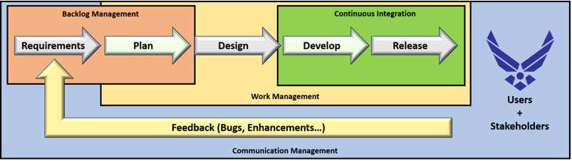
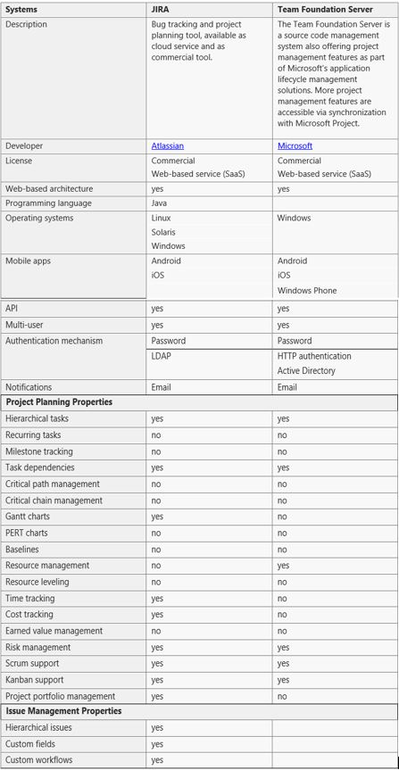
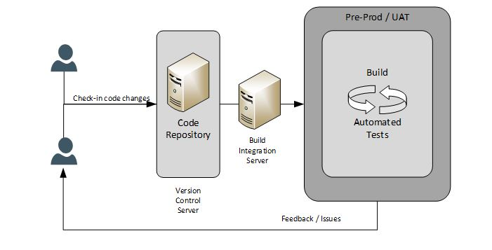

4 Agile Architecture
4.1 Agile Management Tools (AMT)
4.1.1 Purpose:
While the environment is established by stakeholder management and contractual obligations, it is also necessary to establish the physical infrastructure
(toolset) necessary to enable agile. With that in mind, this section will focus on the provisioning of an infrastructure that supplies 4 general functions:

a) Backlog Management - the tools necessary to capture and refine requirements as well as allows the PO to prioritize the different work efforts to provide
the most value. This is the tool that maintains a prioritized and organized listing of the work items which need to be done for the project.
b) Work management - the tools necessary to execute the specific methodology which will be employed by the development team (Scrum, Kanban, XP, hybrid).
This is the tool which provides the team the ability to collaborate on the development of their work items (Scrum Board, Kanban Board, etc).
c) Communications Management - the tools necessary to communicate the status of the development effort to internal and external stakeholders.
It includes the ability to create reports, provide metrics (does not define the metrics themselves), and implement collaborative dashboards with information
which is relevant (i.e. work items complete, work items remaining, identified risks, identified issues, test status, etc). The actual capabilities of the
tool which will be used will be based on the communications needs of the stakeholders involved (the evolution of a dashboard or report is often iterative in
nature as communication needs are better refined).
d) Continuous Integration - While not a necessity, a continuous integration tool makes agile run much more efficiently.
The concept of iterative deliveries to the customer requires a mechanism which allows for continuous inputs by the developers to the code to provide smaller
increments versus the big bang development approach of waiting till everything is done. With continuous integration, you get an iterative product of better
quality based on the integrated automated testing functionality built into the tool (will cover automated testing methodologies and benefits in a companion playbook).
Each section below will include the recommended capabilities required of the enabling tools (general in nature - not tied to specific methodology)
One note - the infrastructure tools used by the HIA community are on the Atlassian set of agile products as well as Team Foundation Server (TFS) / Visual Studios Team Server (VSTS).
The table below shows a quick overview of the differences and similarities between the two in reference to enabling an agile framework.

Links describing how to enable the management systems below within the VSTS/TFS and the Atlassian Products are found in Appendix C - Key Links.
4.1.2 Backlog Management
When considering which tool to use, the following functionalities should be provided:
- Capture and refine requirements into nested Product Backlog Items (PBIs) - Epics, Features, User Stories
- Organize and prioritize those requirements
- Provide a reporting capability to show necessary details to understand the status of those Product Backlog Items
4.1.3 Work Management (i.e. Release Roadmap/Scrum Boards/Kanban Boards)
The following functionalities should be provided:
- Capability to establish an agile execution board:
- Scrum - Sprint Board
- Kanban - Kanban Board
- XP / Hybrid - Agile Board
- Ability to refine the work in progress (add and update the status details of the different work items - including tasks, user stories, etc.)
- Ability to assign responsible parties to the different work items (while agile emphasizes the establishment of responsibility when capacity is available, there needs to be a method to monitor which work items have a responsible resource and which ones are still available to be worked on)
- Capability to report necessary details to understand the status of work in progress (metrics analysis will be provided later in the discussion of communication tools - here we are looking at status of individual versus aggregate work items).
4.1.4 Communication Management
Recommend functions include the ability to produce the following:
- Dashboards
- Metric Analysis Reports:
- Release Roadmaps - These will be discussed later in the methodology, but the release roadmap provides an overview of when features are expected to be complete.
In terms of project management, the release roadmap can be used to establish the schedule for the project.
4.1.5 Continuous Integration Architecture and Management

Recommended functionality for enabling continuous integration in any toolset:
- Version control tool (code repository management)
- Instrumented or scripted build process
- Trigger capability for implementing a build and test cycle based on code check-in
- Automated testing implementation capability
- Automated alerts, in case of a failed test, back to the developers so that they can resolve issue immediately (provide feedback on issues)